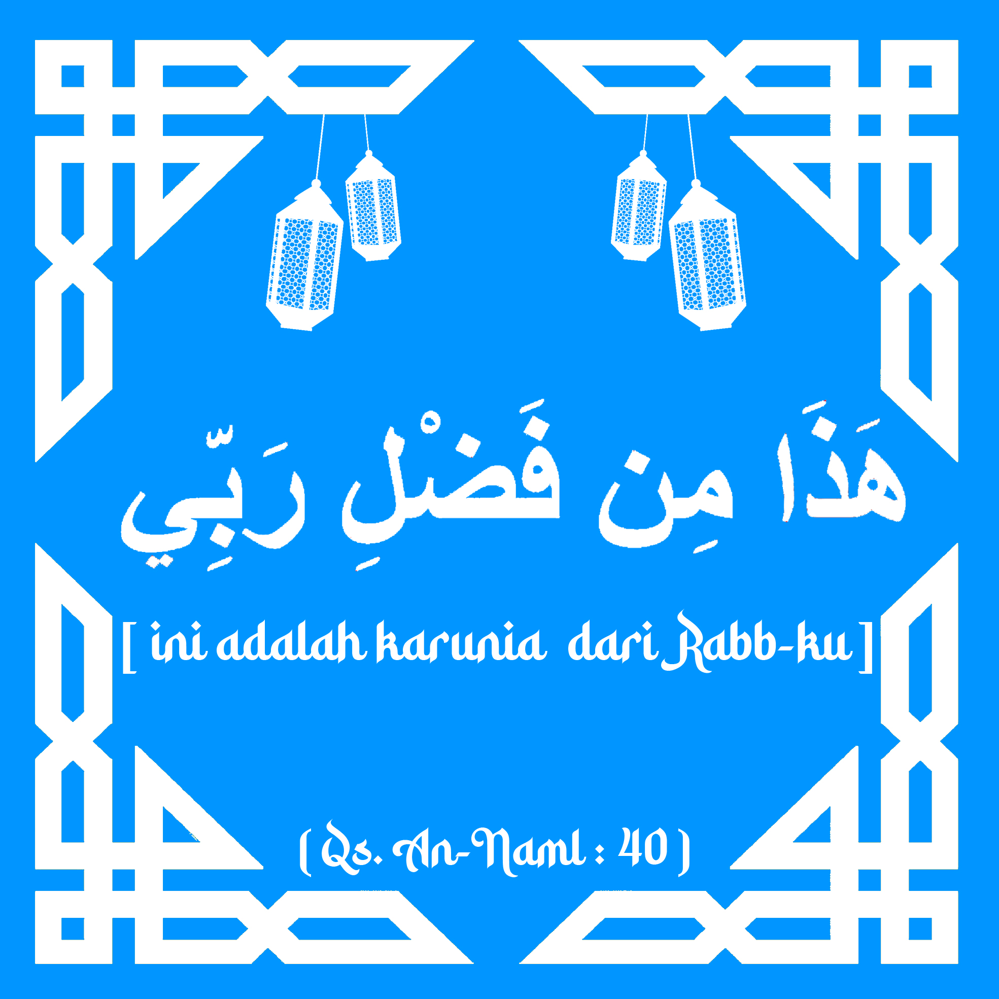
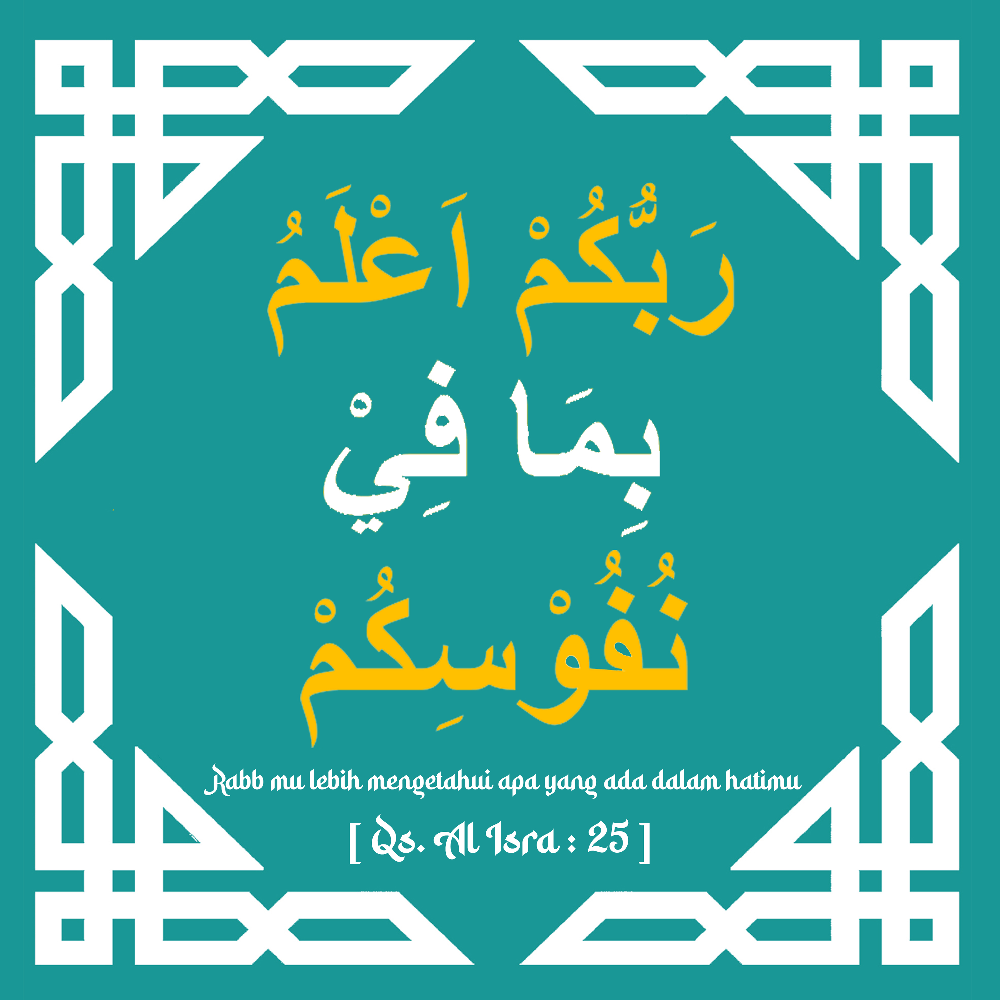

Surat An-Naml Ayat 40
Hadza Min Fadhli Rabbi (هَٰذَا مِن فَضْلِ رَبِّي) merupakan ungkapan Nabi Sulaiman AS yang dalam bahasa Arab artinya 'Ini termasuk karunia dari Rabb-ku'. Ungkapan ini terdapat dalam Alquran surat An Naml ayat 40.
Berdasarkan buku Allah Senantiasa Menjagamu oleh Nurhasan, ayat tersebut menceritakan kisah Nabi Sulaiman AS ketika mendapatkan nikmat dari Allah SWT. Ia mendapat nikmat yang tidak diberikan kepada orang-orang sebelumnya, yaitu nikmat kekuasaan.
Ketika Nabi Sulaiman mendapat nikmat-nikmat itu, tidak ada sedikitpun rasa angkuh dan bangga atas apa yang dimilikinya.
Surat Al-Isra Ayat 25
Rabbukum a'lamu bima fi nufusikum yang artinya " Rabb mu lebih mengetahui apa yang ada dalam hatimu" merupakan potongan ayat dari Surat Al-Isra pada ayat ke 25. Surah Al-isra atau dalam bahasa arab (الإسرا) merupakan Surah ke 17 dalam Al-Qur'an, dan terdiri dari 111 ayat. Surah Al-Isra termasuk ke dalam surah Makkiyah
Surah Al-Isra yang berarti perjalanan malam atau bisa juga diartikan memperjalankan di malam hari. Surah ini juga mempunyai nama lain, yaitu bernama Surah Bani Israel
Kenapa dikaitkan dengan Bani Israel? Sebab, pada ayat 2, 3, 101, 104, Allah menyebutkan tentang Bani Israel yang dahulu menjadi bangsa kuat dan besar, lalu berubah menjadi bangsa terhina setelah menyimpang dari ajaran Allah SWT.